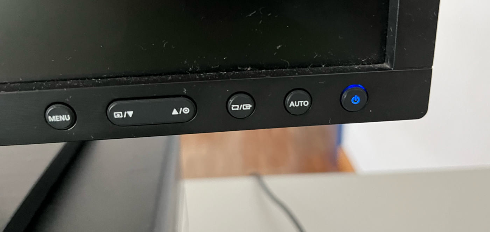
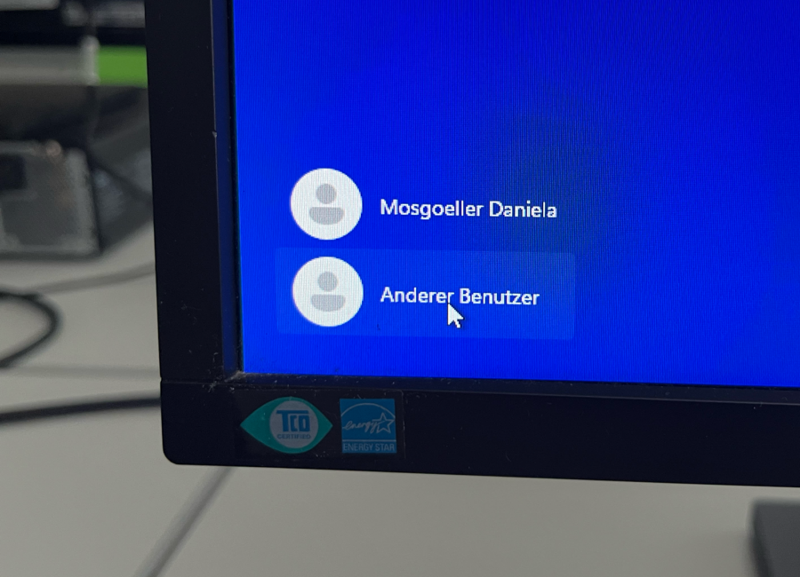

Im Computerraum anmeldenSign in in the computer lab
Windows · Zum Ausdrucken auf A4Windows · Printable on A4
1. Computer und Bildschirm einschalten1. Turn on the computer and monitor
Drücke die Einschalttaste am Computer und am Bildschirm. Warte, bis Windows bereit ist.Press the power button on the computer and on the monitor. Wait until Windows is ready.

2. Anmeldung öffnen2. Open the sign-in screen
Drücke eine Taste oder klicke einmal auf den Bildschirm.Press a key or click once on the screen.
3. Anderer Benutzer wählen3. Choose Other user
Klicke unten links auf Anderer Benutzer (manchmal: Andere Benutzer).At the bottom left, click Anderer Benutzer / Andere Benutzer (“Other user”).

4. Benutzernamen und Passwort eingeben4. Enter your username and password
Benutzername: vorname.nachname Passwort: dein Windows-Passwort. Verwende dasselbe Passwort wie beim letzten Mal.Username: firstname.lastname Password: your Windows password. Use the same password as last time.
5. Anmelden5. Sign in
Drücke Enter oder klicke auf den Pfeil. Warte, bis du den Desktop siehst.Press Enter or click the arrow. Wait until the desktop appears.
Problem? Prüfe die Feststelltaste (Caps Lock) und deinen Benutzernamen. Melde dich bei der Lehrkraft, wenn du nicht weiterkommst.Problem? Check Caps Lock and your username. Ask your teacher if you get stuck.
Danach: Öffne Edge und gehe zu pnorthup.me/grg23/general.Next: Open Edge and go to pnorthup.me/grg23/general.